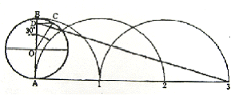
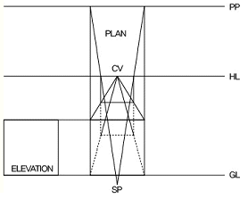
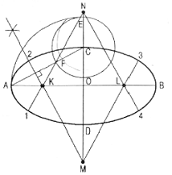
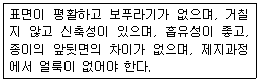

컴퓨터그래픽스운용기능사 (2016-04-02 기출문제)
1과목: 산업디자인 일반
1. 다음 중 이념적인 형의 예로서 옳은 것은?
- 점, 선, 면
- 조약돌, 바다
- 나무, 꽃
- 아취, 빌딩
(정답률: 95%)

2. 스크래치 스케치의 설명으로 옳은 것은?
- 조형, 구성 등에 대해 하나하나의 아이디어를 비교, 검토하는 것
- 메모의 성격을 띤 스케치로 기본적인 개념전개의 발전에 중점을 두는 것
- 비례의 정확성과 투시작도에 의한 외형변화과정을 색채처리에 의해 구체화하는 것
- 결정권자에게 설명하고자 형태, 재질, 색채, 스타일을 적절한 용구와 재료를 이용하여 구체화 하는 것
(정답률: 87%)
3. 제품디자인 개발 시 아이디어 탐색 방법 중 가장 비효율적인 것은?
- 소비자의 욕구, 생활양식 등을 고려한다.
- 영업부서, 판매처로부터 아이디어 제안을 받는다.
- 제안된 아이디어를 상호 비판을 통해 가려낸다.
- 자신의 관찰 경험을 디자인에 자연스럽게 연결하여 아이디어 발상과 전개에 활용한다.
(정답률: 71%)
4. 디자인의 조형원리인 균형과 관련이 없는 것은?
- 비대칭
- 반복
- 주도와 종속
- 비례
(정답률: 49%)
5. 디자인의 요소 중 선에 대한 설명으로 틀린 것은?
- 선은 여러 가지 너비를 가지고 있고, 너비를 넓히면 면으로 이동된다.
- 선의 동적 특성에 영향을 끼치는 것은 점의 속도, 강약, 방향 등이다.
- 점이 일정한 방향으로 진행 할 때 곡선이 생긴다.
- 포물선은 속도감을 주고, 쌍곡선은 균형미를 연출한다.
(정답률: 81%)
6. 빅터 파파넥(Victor Papanek)이 말하는 디자인의 복합기능 중 재료와 도구, 공정과의 상호작용을 의미하는 것은?
- 방법
- 용도
- 연상
- 필요성
(정답률: 47%)
7. 다음의 디자인 전개과정 중 가장 기초적인 단계는?
- 생산 감리
- 생산도면 제작
- 정밀 렌더링
- 아이디어 스케치
(정답률: 94%)
8. 마케팅 목표의 효과적인 달성을 위하여 마케팅 활동에서 사용되는 여러 가지 방법을 전체적으로 균형이 잡히도록 조정 구성하는 일은?
- 맞춤 마케팅
- 마케팅 비법
- 다이렉트 마케팅
- 마케팅 믹스
(정답률: 79%)
9. 멤피스 그룹이 대표적인 경우로, 기능주의에 입각한 모던 디자인에 항거하여 인간의 정서적, 유희적 본성을 중시하는 경향을 지는 양식은?
- 초현실주의
- 포스트모더니즘
- 구성주의
- 다다이즘
(정답률: 73%)
10. 다음 중 간결함, 명쾌한 기능성, 유선형이 디자인 특징인 나라는?
- 독일
- 이탈리아
- 미국
- 스칸디나비아
(정답률: 62%)
11. 다음 중 실내 디자인에 드는 비용을 최소화하는 방안이 아닌 것은?
- 평당 시설비용이 많이 드는 공간의 면적을 줄인다.
- 천장이나 벽면에는 요철을 적게 한다.
- 표준화된 치수의 제품과 규격화된 기성품을 활용한다.
- 자동화 시설로 편리함을 주며, 시설비는 여유롭게 책정한다.
(정답률: 88%)
12. 편집디자인에서 레이아웃(Lay-out)이 갖추어야 할 기본 조건과 거리가 가장 먼 것은?
- 가독성
- 주목성
- 조형성
- 광고성
(정답률: 72%)
13. 아이덴티티 디자인(Identity design)의 기본 시스템(Basic System)에 속하는 것이 아닌 것은?
- 패키지
- 캐릭터
- 색상
- 서체
(정답률: 65%)
14. 다음 중 광고디자인의 구성요소가 아닌 것은?
- 바디카피(body copy)
- 헤드라인(headline)
- 일러스트레이션(illustration)
- 시그니처(signature)
(정답률: 55%)
15. 다음 중 가장 높은 신뢰성과 짧은 매체 수명을 가지는 광고는?
- 프로모션 광고
- 라디오 광고
- 신문광고
- 잡지광고
(정답률: 74%)
16. 실내 디자인의 4단계 과정에 관한 설명이 옳은 것은?
- 기획과정 : 실내 디자인 작업과 관련되어 디자인을 시정하거나 시공 상의 문제점을 해결하는 단계이다.
- 설계과정 : 기획 과정에서 수집한 정보를 활용하여 대상 공간에 가구를 배치하는 단계이다.
- 시공과정 : 설계 과정의 결과를 기초로 하여 실제 작업을 하는 단계이다.
- 사용 후 평가과정 : 결과를 기초로 하여 관련되어 있는 모든 정보를 수집하는 단계이다.
(정답률: 78%)
17. 실내 공간의 구성요소로만 나열한 것은?
- 벽, 바닥, 천장, 창문과 문
- 벽, 재료, 천장, 색채
- 벽, 창문과 문, 형태, 색채
- 형태, 질감, 재료, 매스
(정답률: 91%)
18. 다음 중 황금분할의 비로 맞는 것은?
- 1:1.618
- 1:1.414
- 1:1.518
- 1: 1.418
(정답률: 84%)
19. 다음 중 2차원 디자인에 속하는 것은?
- 타이포그래피(Typo Graphy)
- 가구디자인(Furniture design)
- 패키지(Package)
- 인테리어(Interior)
(정답률: 87%)
20. 디자인 문제 해결의 과정으로 옳은 것은?
- 계획→조사→분석→종합→평가
- 계획→분석→조사→종합→평가
- 계획→조사→분석→평가→종합
- 조사→계획→분석→종합→평가
(정답률: 86%)
2과목: 색채 및 도법
21. 그림의 평면도법은 무엇을 나타내는가?

- 원주 밖의 1점에서 원에 접선 긋기
- 원주에 근사한 직선 그리기
- 원에 외접선 그리기
- 원로를 직선으로 펴기
(정답률: 52%)
22. 다음 중 선을 사용할 때의 우선순위로 옳은 것은?
- 외형선>숨은선>중심선
- 숨은선>중심선>외형선
- 중심선>외형선>숨은선
- 외형선>중심선>숨은선
(정답률: 56%)
23. 다음 치수표시 기호 중 45˚ 모따기 기호는?
- R
- C
- P
- t
(정답률: 71%)
24. 동양의 전통적 색채는 음∙양의 역학적 원리에 근거를 두고 있다. 다음 색 중 음의 색은?
- 빨강
- 노랑
- 파랑
- 주황
(정답률: 82%)
25. 용기와 열정 생동의 표현, 활력의 원천으로 상징되어 온 색은?
- 빨강
- 파랑
- 초록
- 보라
(정답률: 93%)
26. 등각 투상도에서 등각축의 각도는?
- 45˚
- 90˚
- 120˚
- 150˚
(정답률: 74%)
27. 다음 투시도의 작도법은?

- 1소점 투시도
- 2소점 투시도
- 3소점 투시도
- 표고 투상도
(정답률: 58%)
28. 가법혼색의 특징이 아닌 것은?
- 색광의 겹침으로 인한 혼색 현상이다.
- 컬러TV, 스포트라이트 등의 조명이 해당된다.
- 혼합된 색은 명도가 낮아진다.
- 3원색은 빨강(R), 녹색(G), 파랑(B)이다.
(정답률: 76%)
29. 먼셀의 표색계에서 색의 표시 방법인 HV/C에 대한 설명으로 맞는 것은?
- 색상의 머리글자는 V이다.
- 명도의 머리글자는 H이다.
- 채도의 머리글자는 C이다.
- 표기 순서가 HV/C일 때 HV는 색상이다.
(정답률: 69%)
30. 색의 3속성 중 색의 밝고 어두운 정도를 뜻하는 것은?
- 색상
- 명도
- 채도
- 색각
(정답률: 87%)
31. 지형의 높고 낮음을 지도 위에 표시하는 것과 같이 기준면을 정하고, 기준면에 평행한 평면을 같은 간격으로 잘라 평화면상에 투상한 수직투상은?(오류 신고가 접수된 문제입니다. 반드시 정답과 해설을 확인하시기 바랍니다.)
- 정투상법
- 축측 투상법
- 표고 투상법
- 사투상법
(정답률: 54%)
32. 그림과 같은 타원 그리기 방법은?(오류 신고가 접수된 문제입니다. 반드시 정답과 해설을 확인하시기 바랍니다.)

- 두 원을 연접시킨 타원 그리기
- 두 원을 격리시킨 타원 그리기
- 4 중심법에 의한 타원 그리기
- 장축과 단축을 이용한 타원 그리기
(정답률: 51%)
33. 색의 주목성에 대한 설명 중 틀린 것은?
- 고명도, 고채도의 색은 주목성이 높다.
- 일반적으로 명시도가 높으면 주목성도 높다.
- 녹색은 빨강보다 주목성이 높다.
- 포스터, 광고 등에서는 주목성이 높은 배색을 한다.
(정답률: 87%)
34. 어두운 곳에서 빨간 불꽃을 돌리면 길고 선명한 빨간 원을 볼 수 있다. 어떤 현상 때문인가?
- 색의 연상
- 부의 잔상
- 정의 잔상
- 동화 현상
(정답률: 71%)
35. 두 개 이상의 색을 보게 될 때, 때로는 색들끼리 서로 영향을 주어서 인접 색에 가까운 것을 느껴지는 경우가 있다. 이러한 현상을 뜻하는 내용과 관련이 없는 것은?
- 동화효과
- 전파효과
- 혼색효과
- 감정효과
(정답률: 51%)
36. "파랑 느낌의 녹색" 과 같이 기본 색명에 색상, 명도, 채도를 나타내는 수식어를 붙인 색명은?
- 관용색명
- 고유색명
- 일반색명
- 기본색명
(정답률: 49%)
37. 제 3각법에 대한 설명 중 옳은 것은?
- 3소점 투시도를 의미한다.
- 일반적으로 디자인 제도에서는 활용하지 않는다.
- 물체를 제3상한에 놓고 투상하는 방식이다.
- 정면도를 중심으로 위쪽에 좌측면도, 오른쪽에 우측면도를 놓는다.
(정답률: 56%)
38. 색채의 표면색(surface color)을 바르게 설명한 것은?
- 물체의 표면에서 빛이 반사하여 나타나는 색이다.
- 색유리와 같이 빛이 투과하여 나타나는 색을 말한다.
- 색채는 물체의 간접색과 인접색으로 나눌 수 있다.
- 분광 광도계와 같은 접안렌즈를 통하여 보는 색이다.
(정답률: 72%)
39. 배색에 관한 설명 중 틀린 것은?
- 강조색은 작은 면적으로 효과를 극대화 할 때 사용하고 배색의 지루함을 없애준다.
- 배색에서 전체적으로 가장 많은 면적과 기능을 차지하는 것을 주조색이라 한다.
- 여러 가지 색을 서로 어울리게 배열하는 것으로 기능, 목적, 효용에 따라 다양한 방법이 있다.
- 톤 온 톤(tone on tone) 배색은 무채색에 의한 분리 효과를 표현한 배색이다.
(정답률: 76%)
40. 다음 중 색체의 무게감과 가장 관계가 있는 것은?
- 색상
- 명도
- 채도
- 순도
(정답률: 68%)
3과목: 디자인 재료
41. 목재의 화학성분 중 40~50% 가량을 차지하는 것은?
- 셀룰로오스
- 헤미셀룰로오스
- 리그닌
- 물
(정답률: 61%)
42. 필름의 감도를 나타내는 국제 표준화 기구에서 제정한 표시기호는?
- DIN
- ASA
- ISO
- KS
(정답률: 77%)
43. 가공지의 제조방법 중 도피 가공을 한 종이는?
- 아트지
- 유산지
- 리트머스 시험지
- 크레이프지
(정답률: 55%)
44. 물의 양에 따라 농도 조절이 가능하며 접착력이 강하고 내수성이 뛰어난 채색 재료는?
- 수채물감
- 마커
- 아크릴 물감
- 사인펜
(정답률: 66%)
45. 보기와 같은 성질 및 전체 조건이 필요한 용지의 종류는?

- 신문지
- 인쇄용지
- 도화지
- 포장지
(정답률: 67%)
46. 다음 중 기계펄프에 속하는 것은?
- 아황산 펄프
- 쇄목(碎木) 펄프
- 소다 펄프
- 크라프트(Kraft)펄프
(정답률: 58%)
47. 가열하여 유동 상태로 된 플라스틱을 닫힌 상태의 금형에 고압으로 충전하여 이것을 냉각, 경화시킨 다음 금형을 열어 성형품을 얻는 방법은?
- 압축성형
- 사출 성형
- 압출 성형
- 블로우 성형
(정답률: 50%)
48. 안료에 대한설명 중 옳은 것은?
- 안료는 일반적으로 물이나 기름 등에 녹는다.
- 안료는 미립자상태의 액체로 되어 있고, 백색 또는 유색이다.
- 안료는 입자의 크기가 작아지면 내광성이 커진다.
- 안료는 전색제와 함께 물체에 착색된다.
(정답률: 45%)
4과목: 컴퓨터 그래픽스
49. 크기를 변화시켜 출력해도 이미지 데이터의 해상도가 손상되지 않는 이미지는?
- Bitmap Image
- Vector Image
- TIFF Image
- PICT Image
(정답률: 80%)
50. 다음 중 세계 최초의 진공관식 컴퓨터는?
- ENIAC
- EDSAC
- EDVAC
- UNICAD
(정답률: 72%)
51. 포토샵에서 이미지 편집 시 패스(Path) 기능이 필요 없는 경우는?
- 전체 이미지의 밝기와 색상 보정하기
- 경로를 따라가는 글자 입력하기
- 스캔 받은 이미지의 일부분을 따내기
- 특정 모양을 만들어 채색하기
(정답률: 77%)
52. 3차원 컴퓨터그래픽스의 가장 기본적인 형태 제작 기법으로서 꼭지점의 좌표값을 기본으로 모든 형상의 데이터를 구성해가는 것은?
- 큐빅(cubic)
- 그래비티(gravity)
- 메타볼(metaball)
- 폴리곤(polygon)
(정답률: 66%)
53. 입출력 데이터를 일단 고속의 보조기억장치에 일시 저장해두어 중앙처리 장치가 지체 없이 프로그램의 처리를 계속하는 방법을 뜻하는 것은?
- 클립보드(Clip board)
- 캐쉬 메모리(Cache memory)
- 스풀(Spool)
- 하드디스크(hard disk)
(정답률: 45%)
54. 다음 소자에 따른 컴퓨터그래픽스의 역사의 분류가 맞지 않는 것은?
- 제1기 – 진공관
- 제2기 - 트랜지스터
- 제3기 – 집적 회로
- 제4기 - 인공지능
(정답률: 63%)
55. 셀에 그려진 후 촬영된 애니메이션 필름과 동화상 필름을 하나로 합성하여 만드는 애니메이션 기법은?
- 로토스코핑(Rotoscoping)
- 몰핑(Morphing)
- 블랜드(Blend)
- 트위닝(Tweening)
(정답률: 51%)
56. 3차원 모델의 처리속도의 빠르기를 올바르게 표현한 것은?
- 솔리드 모델>와이어프레임 모델>서피스 모델
- 서피스 모델>솔리드 모델>와이어프레임 모델
- 와이어프레임 모델>서피스 모델>솔리드 모델
- 서피스 모델>와이어프레임 모델>솔리드 모델
(정답률: 63%)
57. 탁상출판 혹은 전자출판이라고 일컫는 말의 약어는?
- DPI(Dot per inch)
- CAD(Computer Aided Design)
- DTP(Desk Top Publishing)
- PPI(Pixel per inch)
(정답률: 77%)
58. 비트맵 방식의 프로그램에서 화면을 구성하고 있는 최소 단위는?
- 픽셀(Pixel)
- 페인팅(painting)
- 필터(Filter)
- 채널(Channel)
(정답률: 91%)
59. 인쇄와 인쇄용지에 관한 설명 중 맞지 않는 것은?
- 국전지 사이즈는 636㎜×936㎜이다.
- A4사이즈는 210㎜×297㎜이다.
- 볼록판 인쇄(relief printing)에 사용하는 판은 잉크가 묻는 화선부가 비화선부보다 높게 되어 있다.
- 인쇄에 사용되는 기본칼라는 RGB이다.
(정답률: 73%)
60. 다음 중 전자출판 방식으로 디자인하고자할 때 가장 효과적인 소프트웨어는?
- 3D MAX
- Illustrator
- Photoshop
- Indesign
(정답률: 77%)